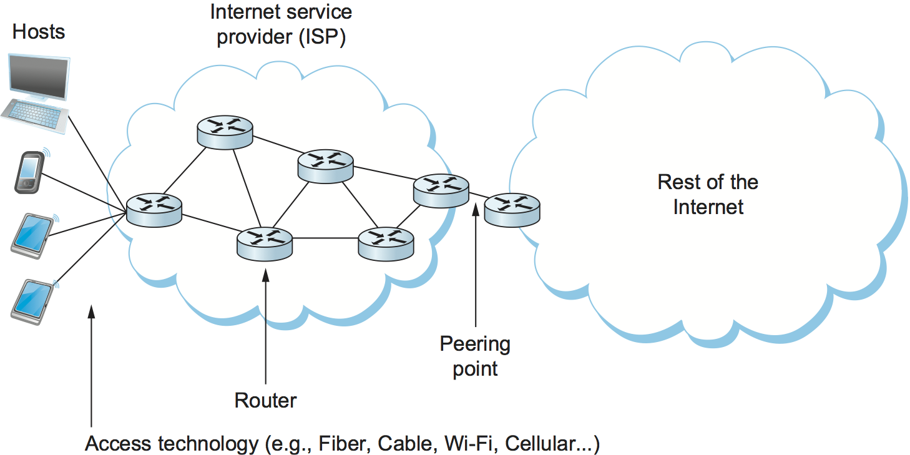
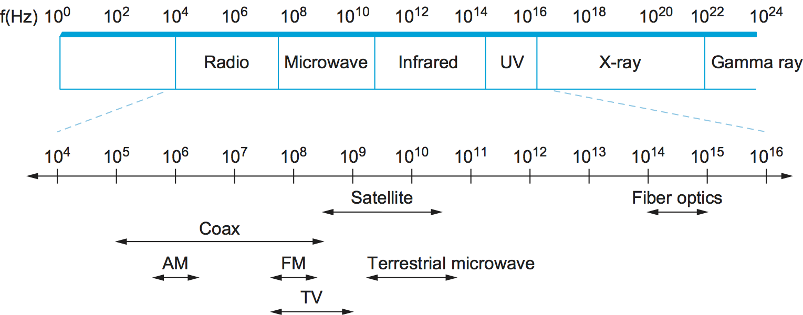

2.1 기술 지형
이 장의 첫머리 문제 제기에서 설명한 도전 과제로 들어가기 전에, 먼저 다양한 링크 기술이 펼쳐진 전반적인 지형을 살펴보는 것이 도움이 된다. 이는 사용자가 자신의 장치를 연결하려는 상황이 매우 다양하기 때문이다.
스펙트럼의 한쪽 끝에서는 전 지구적 네트워크를 구축하는 네트워크 운영자가 냉장고만 한 라우터들을 수백, 수천 킬로미터에 걸쳐 연결하는 링크를 다뤄야 한다. 다른 한쪽 끝에서는 일반 사용자가 주로 컴퓨터를 기존 인터넷에 연결하는 수단으로 링크를 접한다. 어떤 때는 커피숍의 무선(Wi-Fi) 링크일 수 있고, 어떤 때는 사무실 건물이나 대학의 이더넷 링크일 수 있으며, 또 어떤 때는 셀룰러 네트워크에 연결된 스마트폰일 수 있다. 점점 더 많은 사람들에게는 ISP가 제공하는 광섬유 링크가 해당되며, 또 많은 사람은 각종 구리선 또는 케이블을 사용해 연결한다. 다행히도 이렇게 겉보기에는 서로 다른 링크 유형들에도 공통으로 적용되는 여러 전략이 있어서, 프로토콜 스택의 상위 계층에 신뢰할 수 있고 유용한 링크로 만들 수 있다. 이 장에서는 그러한 전략을 살펴본다.
{kind=link}

그림 21. 최종 사용자의 관점에서 본 인터넷.
그림 21은 오늘날 인터넷에서 볼 수 있는 다양한 유형의 링크를 보여 준다. 왼쪽에는 스마트폰, 태블릿, 본격적인 컴퓨터에 이르기까지 여러 최종 사용자 장치가 다양한 방식으로 ISP에 연결된 모습이 보인다. 이 링크들은 서로 다른 기술을 사용할 수 있지만, 이 그림에서는 모두 장치와 라우터를 잇는 직선 하나로 동일하게 표현된다. ISP 내부에서 라우터끼리 서로 연결하는 링크도 있고, ISP를 "인터넷의 나머지 부분"과 연결하는 링크도 있는데, 여기서 인터넷의 나머지 부분은 수많은 다른 ISP와 그들이 연결하는 호스트들로 이루어져 있다.
이 링크들이 모두 비슷하게 보이는 이유는 우리가 그림을 잘 못 그려서만은 아니다. 네트워크 아키텍처의 역할 가운데 하나는 링크처럼 복잡하고 다양한 대상을 공통된 추상화로 제공하는 것이기 때문이다. 핵심은 노트북이나 스마트폰이 자신이 어떤 종류의 링크에 연결되어 있는지 신경 쓸 필요가 없다는 점이다. 중요한 것은 인터넷으로 가는 링크가 있다는 사실뿐이다. 마찬가지로 라우터도 다른 라우터와 자신을 연결하는 링크의 종류를 신경 쓸 필요가 없다. 그 링크로 패킷을 보내면, 그 패킷이 링크의 반대편 끝에 도달하리라고 상당히 기대할 수 있다.
어떻게 이처럼 서로 다른 종류의 링크를 최종 사용자와 라우터에게 충분히 비슷하게 보이도록 만들 수 있을까? 본질적으로는 현실 세계에 존재하는 링크의 물리적 한계와 약점을 모두 다뤄야 한다. 이 장의 도입 문제 제기에서 이러한 이슈 일부를 이미 개괄했지만, 이를 논의하기 전에 먼저 간단한 물리 개념을 소개해야 한다. 이런 링크는 모두 전파나 다른 형태의 전자기 복사처럼 신호를 전파할 수 있는 어떤 물리적 재료로 이루어져 있지만, 우리가 실제로 보내고 싶은 것은 비트다. 이 장의 뒤쪽 절에서는 물리 매체를 통해 비트를 전송하기 위해 어떻게 부호화하는지 살펴보고, 이어서 앞서 언급한 다른 문제들도 다룬다. 이 장이 끝날 무렵에는 어떤 물리 매체가 사용되든 거의 모든 종류의 링크를 통해 완전한 패킷을 보내는 방법을 이해하게 될 것이다.
따라서 링크를 특징짓는 한 가지 방법은 그것이 사용하는 매체로 분류하는 것이다. 보통은 꼬임쌍선(일부 이더넷과 유선 전화)이나 동축선(케이블) 같은 형태의 구리선, 가정까지의 광 연결과 인터넷 백본의 많은 장거리 링크에 사용되는 광섬유, 또는 무선 링크에 사용되는 공기/자유 공간이 이에 해당한다.
링크의 또 다른 중요한 특성은 전자기파가 진동하는 주파수이며, 이는 헤르츠(Hz) 단위로 측정한다. 파동에서 서로 인접한 최대점 또는 최소점 사이의 거리를 보통 미터 단위로 측정하며, 이를 파동의 파장이라고 한다. 모든 전자기파는 빛의 속도로 이동하고 (그 속도는 다시 매체에 따라 달라진다), 그 속도를 파동의 주파수로 나누면 파장을 얻을 수 있다. 우리는 이미 300 Hz에서 3300 Hz 사이의 연속적인 전자기 신호를 전달하는 음성급 전화선의 예를 본 적이 있다. 구리를 따라 진행하는 300 Hz 파의 파장은 다음과 같다.
구리에서의 빛의 속도 / 주파수
= 2/3 × 3 × 108 / 300
= 667 × 103 미터
일반적으로 전자기파는 훨씬 더 넓은 주파수 범위에 걸쳐 있으며, 전파에서 적외선, 가시광선, 엑스선, 감마선에 이르기까지 분포한다. 그림 22는 전자기 스펙트럼을 보여 주고, 어떤 매체가 어떤 주파수 대역을 전달하는 데 흔히 사용되는지도 나타낸다.
{kind=link}

그림 22. 전자기 스펙트럼.
그림 22에는 셀룰러 네트워크가 어디에 들어가는지는 나타나지 않는다. 이는 조금 복잡한데, 셀룰러 네트워크에 할당되는 구체적인 주파수 대역이 전 세계적으로 다르고, 더 나아가 네트워크 운영자가 서로 다른 주파수 대역을 차지하는 구형/레거시 기술과 신형/차세대 기술을 동시에 지원하는 경우가 많기 때문이다. 크게 요약하면, 전통적인 셀룰러 기술은 700 MHz에서 2400 MHz 범위에 걸쳐 있고, 최근에는 6 GHz 대역에서 중간 스펙트럼 할당이 이루어지고 있으며, 24 GHz 이상에서는 밀리미터파(mmWave) 할당이 열리고 있다. 이 mmWave 대역은 5G 이동통신망의 중요한 부분이 될 가능성이 크다.
지금까지 우리는 링크를 전자기파 형태의 신호를 전달하는 물리 매체로 이해했다. 이러한 링크는 우리가 관심을 두는 정보, 즉 이진 데이터 (1과 0)를 포함한 모든 종류의 정보를 전송하는 기반을 제공한다. 이진 데이터는 신호 안에 부호화된다고 말한다. 이진 데이터를 전자기 신호에 부호화하는 문제는 복잡한 주제다. 이를 조금 더 다루기 쉽게 만들기 위해 두 개의 계층으로 나누어 생각할 수 있다. 아래 계층은 변조를 다루는데, 이는 정보 전달을 위해 신호의 주파수, 진폭, 위상을 변화시키는 것이다. 변조의 간단한 예는 단일 파장의 세기(진폭)를 바꾸는 것이다. 직관적으로는 전등을 켰다 껐다 하는 것과 같다. 변조 문제는 컴퓨터 네트워크의 구성 요소로서 링크를 다루는 우리의 논의에서 부차적이므로, 여기서는 단지 서로 구별 가능한 한 쌍의 신호, 즉 "high" 신호와 "low" 신호를 전송할 수 있다고 가정하고, 이 두 신호에 이진 데이터를 부호화하는 훨씬 더 단순한 문제만을 고려한다. 다음 절에서 이러한 부호화 방식을 설명한다.
링크를 분류하는 또 다른 방법은 그것이 어떻게 사용되는가에 주목하는 것이다. 서로 다른 링크 유형이 어디에서 발견되는지는 경제성과 배치상의 다양한 문제에 영향을 받는 경향이 있다. 대부분의 소비자는 커피숍, 공항, 대학 등에서 접하는 무선 네트워크를 통해, 또는 그림 21에서 보인 것처럼 ISP가 제공하는 소위 라스트마일 링크(또는 액세스 네트워크)를 통해 인터넷을 이용한다. 이러한 링크 유형은 표 2에 요약되어 있다. 이들은 보통 수백만 소비자에게 도달하는 비용 효율적인 방법이기 때문에 선택된다. 예를 들어 DSL(Digital Subscriber Line)은 기존 유선 전화 서비스에 이미 깔려 있던 꼬임쌍선 구리선 위에 구축된 오래된 기술이다. G.Fast는 보통 다세대 아파트 건물 내부에서 사용되는 구리 기반 기술이며, PON(Passive Optical Network)은 최근 구축된 광섬유를 통해 가정과 기업을 연결하는 데 흔히 쓰이는 더 새로운 기술이다.
서비스 |
대역폭 |
|---|---|
DSL (구리) |
최대 100 Mbps |
G.Fast (구리) |
최대 1 Gbps |
PON (광) |
최대 10 Gbps |
물론 우리의 모바일 장치를 인터넷에 연결하는 모바일 또는 셀룰러 네트워크도 있다(4G라고도 불리지만 빠르게 5G로 진화하고 있다). 이 기술은 가정이나 사무실에 들어오는 유일한 인터넷 연결 수단으로도 쓰일 수 있으며, 장소를 이동하면서도 인터넷 연결을 유지할 수 있다는 추가적인 장점이 있다.
이러한 예시 기술은 가정이나 사업장의 라스트마일 연결을 위한 흔한 선택지이지만, 처음부터 완전한 네트워크를 구축하기에는 충분하지 않다. 그렇게 하려면 도시들을 서로 연결할 장거리 백본 링크도 필요하다. 오늘날의 현대적인 백본 링크는 거의 모두 광섬유이며, 보통 SONET (Synchronous Optical Network)라는 기술을 사용하는데, 이는 원래 전화 사업자의 까다로운 관리 요구 사항을 충족하기 위해 개발되었다.
마지막으로 라스트마일, 백본, 모바일 링크 외에도 건물이나 캠퍼스 내부에서 볼 수 있는 링크가 있는데, 일반적으로 근거리 통신망(LAN) 이라고 부른다. 이 영역에서는 이더넷과 그 무선 대응 기술인 Wi-Fi가 지배적인 기술이다.
이 링크 유형 개관이 결코 포괄적인 것은 아니지만, 존재하는 링크 유형의 다양성과 그러한 다양성이 생겨난 몇 가지 이유를 맛보기로는 충분했을 것이다. 이어지는 절들에서는 네트워킹 프로토콜이 이러한 다양성을 어떻게 활용하고, 저수준의 복잡성과 경제적 요인이 있음에도 불구하고 상위 계층에 일관된 네트워크 관점을 제시하는지 살펴볼 것이다.